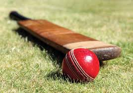

Game Overview
Cricket is a bat-and-ball game played between two teams of eleven players. It is a sport with rich history and has produced many memorable moments and legendary players. The game is known for its strategic depth, exciting gameplay, and passionate fan base.
Game Highlights
Memorable Moments
Cricket has seen countless unforgettable moments, from breathtaking catches to thrilling last-ball finishes. These moments define the sport and captivate fans around the world.
Key Players
Cricket has produced many iconic players, such as Sachin Tendulkar, Don Bradman, and Virat Kohli. These legends have left an indelible mark on the game with their exceptional skills and performances.

Tournaments
Cricket features prestigious tournaments like the ICC World Cup, T20 World Cup, and The Ashes. These events bring together the best teams and players, offering high-stakes competition and drama.
How to Get Started
Starting your journey in cricket is simple. Follow these steps to get involved:
- Purchase basic cricket gear: a bat, ball, and protective equipment.
- Find a local club or community group to join.
- Practice fundamental skills: batting, bowling, and fielding.
- Watch professional matches to learn strategies and techniques.
Interactive Element
Test Your Knowledge
What is the maximum number of overs a bowler can bowl in a One Day International match?